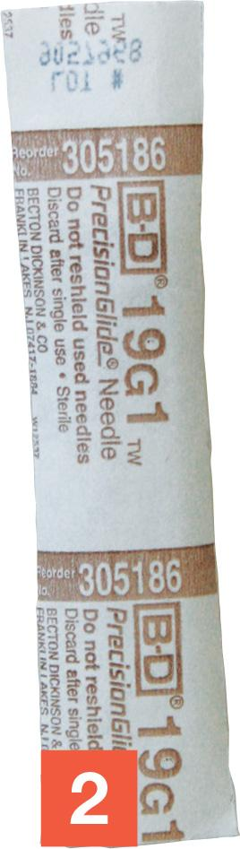
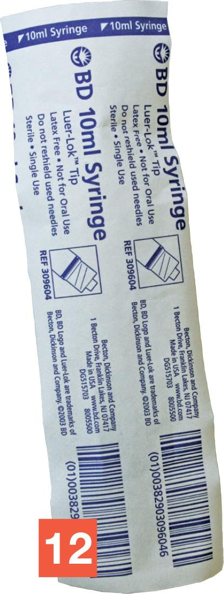
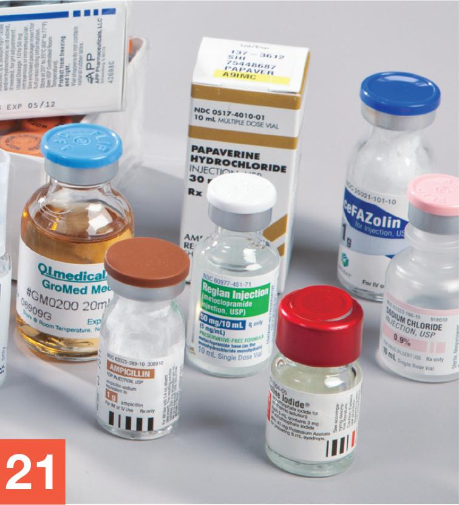
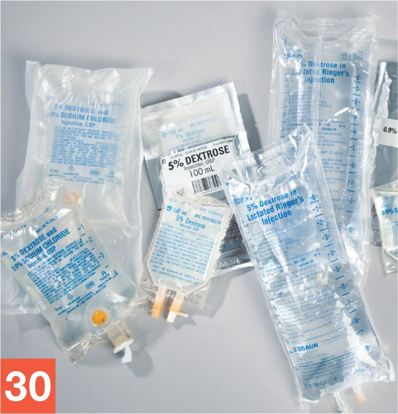
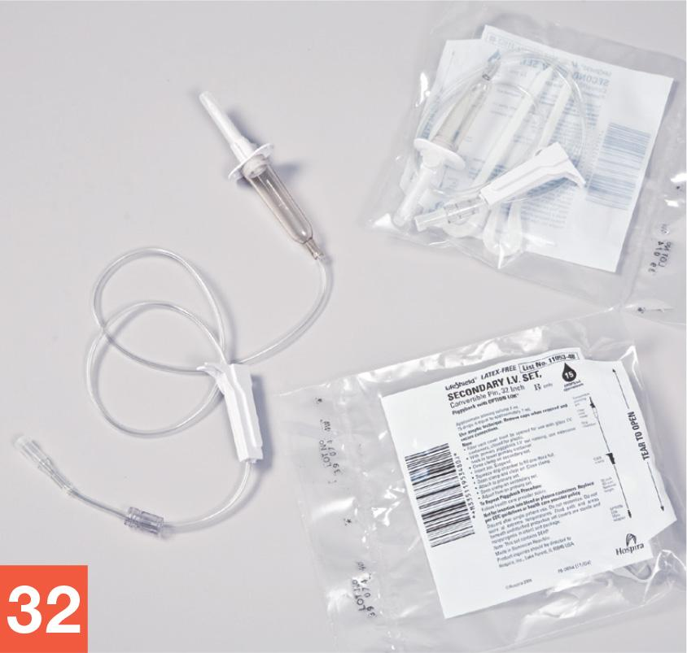

Part 2: Training
5.6 Exploratory Lab
Now that you, as a sterile compounding student, have a basic understanding of the components and handling of sterile compounding supply items, you have the opportunity to visualize and explore these items. The purpose of this exploratory lab is to provide you with hands-on experience in examining and manipulating sterile compounding supply items. In addition, this lab helps you to identify the critical sites of various compounding supplies. By knowing these sites well, you can more easily avoid touch contamination and shadowing when you prepare CSPs—both while using this textbook and in the sterile compounding environment. To complete this exploratory lab most effectively, perform these procedures while sitting at a desk or table in the classroom.
Caution:
This lab allows you to view and manipulate the critical sites of many supply items in a way that you will never do in pharmacy practice. Because the lab is designed to familiarize you with critical sites by touching and labeling them, all of the supply items are considered contaminated.
After completing this lab, you must remember to never shadow, mark, or otherwise touch the critical site of any supply item once it has been wiped with sterile 70% IPA. You must also remember to never bring any of the supply items out of the clean air zone and into the contaminated, outer six-inch zone of a PEC.
Supplies
- transparent tape (five 3” strips)
- pen or pencil
- stickers (11 small [at least ¾”] dots)
- one sheet of notebook paper (8.5” × 11”)
- one sterile regular needle (any size; not a vented, filter, or transfer needle)
- one sterile 10 mL syringe
- one vial (any size, any ingredient)
- 500 mL IV of dextrose 5% in water (D5W)
- 50 mL IVPB of 0.9% sodium chloride (NS)
- waste container
- sharps container
- sterile IV tubing
Procedure
Take a careful, deliberate approach to each detailed step of this exploratory lab. In practice, using this approach ensures your understanding of the skills necessary for real-world sterile compounding.
Opening, Identifying, and Labeling a Needle and a Syringe
- Assemble all of the supplies at your desk or table.
- Pick up the package that contains the sterile needle and note which end of the package contains the needle hub and which end contains the needle tip.

© Paradigm Education Solutions - Slowly peel apart the paper-and-plastic wrapper that encases the needle, starting at the end that is slightly separated.
- Grasp the hard-plastic needle cap, with needle inside, with your nondominant hand. Use your dominant hand to remove the paper needle wrapper and discard it into the waste container.
- Bring the capped needle close to you so that you may examine it. Then grasp the hub of the needle with the thumb and forefinger of your dominant hand.
- Carefully remove the needle cap by pulling it well away from the needle with your nondominant hand. Temporarily place the needle cap onto your desk.
- Examine the needle thoroughly so that you can identify each of its components.
- Use transparent tape to carefully affix the uncapped needle to a piece of paper. Use a pen or pencil to record labels that point to the needle’s components: needle tip, bevel, heel, needle shaft, lumen, and needle hub.
- Answer the following multiple-choice question, recording your answer as directed by your instructor.
9–1. Which list of components reflects the critical sites of a needle?
- needle cap, hub, bevel, tip, heel, shaft, lumen
- needle hub, tip, shaft, lumen
- needle hub, bevel, tip, shaft, lumen, plunger
- needle hub, bevel, tip, heel, shaft, lumen
- Draw an asterisk on the paper next to each labeled needle component that is considered a critical site.
- Tape the needle cap to the paper and label it as such. Place the paper with the labeled needle aside on your desk or table.
- Pick up the wrapped syringe. Identify the end of the syringe where the syringe tip is located.

© Paradigm Education Solutions - Slowly peel apart the wrapper that encases the syringe, beginning at the end that is slightly separated.
- Grasp the barrel of the syringe in your dominant hand. Remove the syringe wrapper and place it into the waste container. If there is a plastic cap on the syringe tip, remove it and place it into the waste container as well.
- Bring the syringe close to you and examine it carefully while holding the barrel of the syringe in your nondominant hand. Using your dominant hand, pull down on the flat knob. Notice how this motion moves the plunger. Push up on the flat knob and notice how the plunger responds.
- Tape the syringe to the piece of paper, next to the needle and needle cap. Use a pen or pencil to record labels that point to the syringe tip, barrel, calibration marks, piston plunger, inner shaft, and flat knob on the paper.
- Answer the following multiple-choice question, recording your answer as directed by your instructor.
17–1. Which list of components reflects the critical sites of a syringe?
- syringe tip, piston plunger, inner shaft
- syringe tip, cap, piston plunger, inner shaft
- syringe tip, barrel, piston plunger, inner shaft
- barrel, piston plunger, inner shaft
- Draw an asterisk on the paper next to each labeled syringe component that is considered a critical site.
- Take the paper with the labeled needle and syringe and temporarily set it aside on your desk or table.
Opening, Identifying, and Marking a Vial
- If necessary, remove the vial from its outer packaging. Discard the outer packaging into the waste container.
- Bring the vial close to you so that you can examine it. Read the vial’s label carefully and then answer the following multiple-choice question, recording your answer as directed by your instructor.
21–1. What information is found on a vial’s label?
- patient’s name, patient’s room number, name of drug, and strength of drug
- name of drug, strength of drug, and/or amount of drug
- manufacturer’s name and expiration date
- both b and c

George Brainard/© Paradigm Education Solutions - On the paper, write the name of the medication or solution contained in the vial. Record the drug’s strength or concentration as well.
- Remove the plastic cap that covers the top of the vial. Examine the vial stopper.
- Place a sticker on the critical site of the vial. Place the stickered vial onto your desk or table alongside the paper.
Opening, Identifying, and Labeling IV and IVPB Base Solution Bags
- Pick up the IV base solution bag. Examine the outer packaging or dust cover to identify the end that is perforated for ease of opening. Tear the dust cover lengthwise, along the perforation.
- Remove the IV base solution bag from the dust cover. Discard the dust cover into the waste container.
- Closely examine the IV base solution bag to identify its five major components. Write the name of each component on a separate sticker and then add an asterisk on each sticker that contains the name of a critical site.
- Place all of the stickers onto the IV base solution bag in their correct locations and then place the stickered IV bag aside on your desk or table.
- Repeat steps 25–28 for the IVPB base solution bag.
- Answer the following multiple-choice question, recording your answer as directed by your instructor.
30–1. Which list of components refers to both IV and IVPB base solution bags?
- hang loop, manufacturer’s identification information, injection port, tubing port
- hang bar, calibration marks, manufacturer’s identification information, injection port, drip chamber
- hang loop, manufacturer’s identification information, needle adapter, injection port, tubing port
- hang loop, calibration marks, needle adapter, injection port, tubing port

George Brainard/© Paradigm Education Solutions
Opening, Identifying, and Labeling Sterile IV Tubing
- Tear open the outer packaging that contains the sterile IV tubing and discard the wrapper into the waste container.
- Closely examine the components of the sterile IV tubing.

George Brainard/© Paradigm Education Solutions - Move the roll clamp down until the tubing is completely closed. Notice the protective cap covering the spike and needle adapter.
- Use the remaining pieces of tape to affix the sterile IV tubing onto the paper and then answer the following multiple-choice questions, recording your answers as directed by your instructor.
34–1. Which list of components is found on sterile IV tubing?
- universal spike adapter, drip chamber, tubing, roll clamp, needle hub
- universal spike adapter, drip chamber, tubing, roll clamp, needle adapter
- drip chamber, tubing, roll clamp, needle adapter, syringe tip
- drip chamber, tubing, roll clamp, needle hub, syringe tip
34–2. Which part of the sterile IV tubing controls the flow rate of the IV fluid?
- universal spike adapter
- drip chamber
- roll clamp
- needle adapter
- Use a pen or pencil to record labels that point to the five major components of the sterile IV tubing, adding an asterisk on the paper next to components considered to be critical sites.
Concluding the Procedure
- Ask your instructor to verify that you have correctly identified all components and critical sites of the needle, syringe, vial, IV base solution bag, IVPB base solution bag, and sterile IV tubing. Your instructor will also verify that you wrote down the correct name and strength of the vial’s contents.
- Once your instructor has checked your work, place the paper with the needle, syringe, and IV tubing into a sharps container. Return the vial, IV base solution bag, and IVPB base solution bag to your instructor for storage. Discard any remaining trash into the waste container. Return the sharps container and waste container to their designated locations.
Note: For the purposes of this lab only, you discard the paper with the affixed needle, syringe, and IV tubing directly into the sharps container. In practice, paper items are generally discarded into a waste container, not into a sharps container.